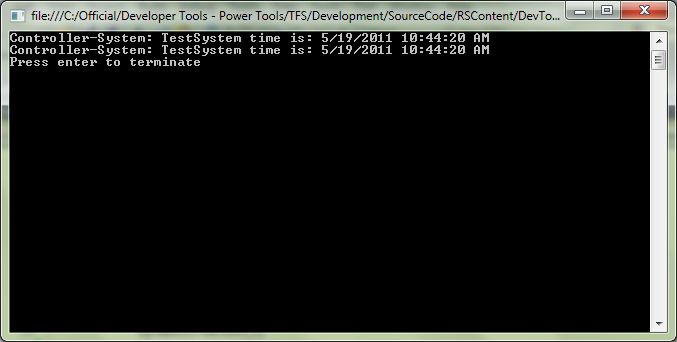
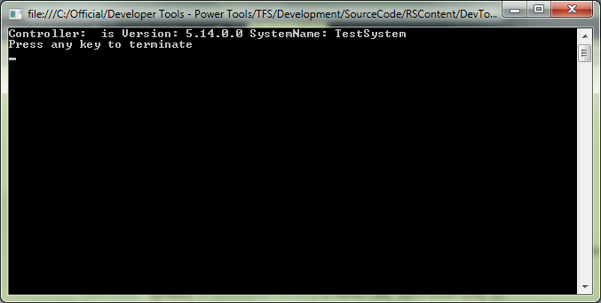
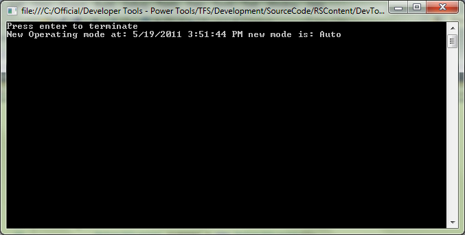

Accessing Controller Data
The walkthrough provides multiple examples on how to access controller data. The sections below describe each example.
Download
Click here to download
Create Controller
A controller object is created in the following two ways. Creating a controller object is an entry point to accessing controller data.
- Using Network Scanner, which scans the network and returns a list of controllers.
- Using Controller Guid.
Output of this example looks as shown below:

NetDumpRapid
This example explains the procedure to retrieve all routine names from the Rapid Module.
- All the tasks are retrieved from controller Rapid.
- All the modules are then retrieved from each Tasks from controller Rapid.
- Each Routine is then traced from the Module and printed out on the console.

VirtualController Events
This example explains the procedure to retrieve all routine names from the Rapid Module.
- A virtual Controller is retrieved using a network scanner.
- Subscribe the controller to the OperationModeChanged Event,
- A mode change on the Virtual FlexPendant will trigger the changed mode event on the controller OperationModeChanged method.
